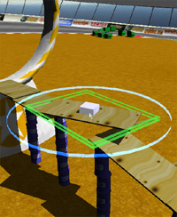
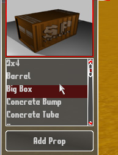
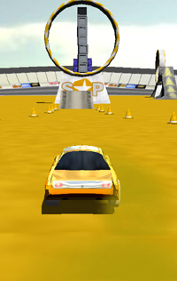
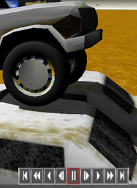

|
The
game has 4 basic modes: PLACING, SELECTING, PLAYING, and
REPLAYING. when you first start up the game, you will
see the Stunt Playground logo. click the mouse to continue into
PLACING mode, the main editing mode of the game (for
building your own stunt arenas)
|
|
PLACING

|
The
cube you see in the center of the screen is the 3D cursor, used
for placing/moving objects in the arena.
Move
the cursor with the mouse. the movement is relative to
the camera angle.
Move
the cursor up and down by holding down the RMB (right
mouse button) and moving the mouse.
Rotate
the cursor by rolling the mouse wheel (or by holding
down the SHIFT key and moving the mouse to the left/right).
the transparent ring around the cursor indicates the current
rotational direction.
you
can change the rotational axis by simply pressing one of the X,
Y, or Z keys.
If
you get the cursor in a strange orientation, and want to revert
back to "zero", press the TAB key. this will
reset the rotation for the cursor back to zero.
You
can change the camera angle by holding the CTRL key on
the keyboard and moving the mouse.
you
can zoom the camera in/out by holding the CTRL key and
rolling the mouse wheel, or holding down CTRL and
SHIFT, and moving the mouse.
when
you have the cursor in a position where you want to place a
prop, click the LBM (left mouse button).
after
selecting a prop, your cursor will "become" that
prop. you can move it around in the same way as you move the
cursor.
when
holding a prop, click the LBM to drop it.
when
holding a prop, press the BACKSPACE key to remove it.
to
quickly spawn another prop of the same type, just press the "R"
key in placing mode. a new prop of the same type as the last
prop placed will be created at the current cursor position.
this makes placing lots of props (stacks, etc) much quicker.
if
you press ESCAPE (to return to the main menu) while
holding a prop, the prop you are holding will be removed and
you will be taken back to the main menu.
NOTE:
some props are "static", which means that in the game,
they will not budge, and are "locked" in place. these
props cannot be placed on top of other props, etc. because if
the prop underneath was removed, it would look wrong. as a
result, these props have a special check to make sure they are
placed upright. if you see the (usually green) box around a
prop turn red, it means you cannot place this prop at the
current location. try moving it elsewhere.
|
|
SELECTING

|
when
in selecting mode, a menu automatically appears on the
left and right side of the screen.
choose
the prop you want to add from the list (a picture of the prop
is also shown), and then press the "Add Prop"
button to add it to the scene.
to
drive around in the scene, press the "GO->"
button. a car will spawn, and you are now in PLAYING
mode. see the section below for more information.
press
the "QUIT" button to quit.
you
can also press the ESCAPE key to switch back to PLACING
mode without adding a prop.
from
this menu you can also save/load arenas, as well as load
any saved replays you have on your system. The game
comes with a few arenas and replays to get you started.
click
the "settings" button to change an game
settings. if you are experiencing slow performance in the
game, try turning off real-time shadows, they have the biggest
impact on performance. turning off real-time reflections may
also slightly help improve in-game performance.
|
|
PLAYING

|
When
you press "GO" from the main menu, you are
taken to the vehicle selection. use the LEFT/RIGHT
arrow keys, or the A and D keys to choose your
vehicle, and then press Enter or UP or W to
start driving!
|
W
/ UP
|
throttle
/ acceleration
|
|
S
/ DOWN
|
brakes
/ reverse
(in
automatic transmission mode)
|
|
A
/ LEFT
|
turn
left
|
|
D
/ RIGHT
|
turn
right
|
|
Q
|
shift
up ( manual transmission only)
|
|
Z
|
shift
down ( manual transmission only)
|
|
R
|
reset
the car (when flipped over)
|
|
C
|
change
camera angle. one of the cameras is the FREE camera. With
this angle, you can rotate and zoom the camera by dragging
the mouse, and rolling the mouse wheel (or holding SHIFT)
while dragging.
|
gear
"0" is the reverse gear. currently there is
no neutral gear.
press
the ESCAPE key to destroy the vehicle, and go back to
PLACING mode. if you have the "restore arena after
driving" option turned ON (in the settings menu), the
arena will be restored back to it's state before you started
driving.
NOTE:
in Manual transmission mode, use the keys above to shift gears.
If Manual is turned off, you can just hold the brake key to
drive in reverse, like most arcade games- after the car stops,
it automatically switches into reverse gear.
Stunt
Playground also stores a few records of your accomplishments.
These can be seen any time while driving, in the upper-left
portion of the screen, and are identified by the following
icons:
|

|
Longest
jump in terms of distance (in meters)
|
|
|
Most
air-time for a single jump (in seconds)
|
|
|
Most
flips in a single jump
|
|
|
Longest
time on 2 wheels (in seconds)
|
|
|
REPLAYING

|
in
replay mode you can playback the action you have recorded
while driving. use the buttons in the lower right corner of the
screen to navigate like a standard VCR. Here's a full
explanation of the buttons, from left-to-right:
press
C to change the camera angle. one of the cameras is the
FREE camera. With this angle, you can rotate and zoom
the camera by dragging the mouse, and rolling the mouse wheel
while dragging.
you
can save the current replay to disk by pressing the SAVE
REPLAY button and entering a name for the replay. saved replays
can be found in the "Media/replays" folder of the
Stunt Playground installation.
Press
either SPACE BAR or ESCAPE to quit the replay and
go back to driving.
|